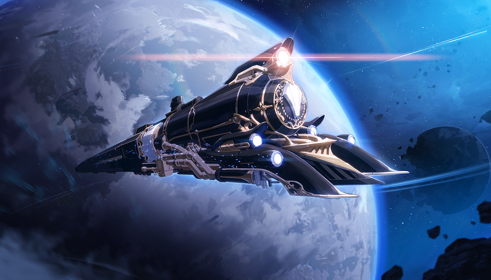
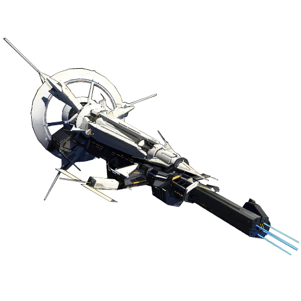
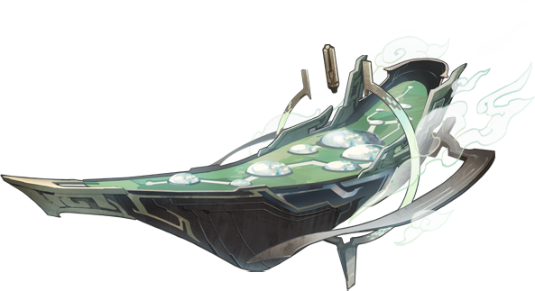
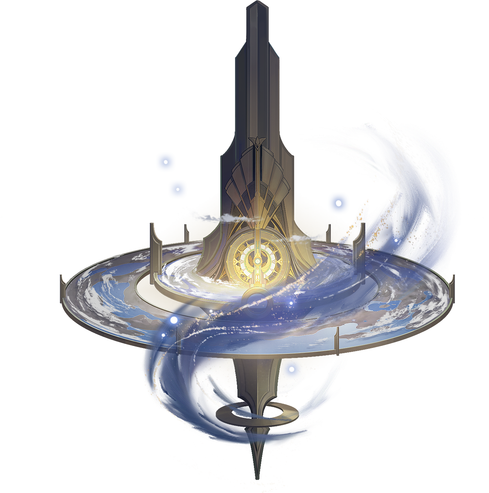

Honkai: Star Rail Major Location

The Astral Express, also called by the Xianzhou Alliance as the Chromatic Echelon,is a large train that serves as one of the main settings of Honkai: Star Rail. It was created by Akivili, the Aeon of Trailblaze, and used to transport THEM and the Nameless across the galaxy. After Akivili's disappearance, it fell into disrepair and eventually crash-landed onto an unnamed planet. Himeko discovered the wreckage and repaired the Express, becoming its navigator and forming a new Astral Express Crew. Their current goal is to retrace Akivili's steps, repairing the star rail THEY laid down thousands of years ago and sealing the Stellarons threatening the galaxy. The Astral Express is not treated as its own world in Navigation, but is instead accessible from every world's area list. Currently, three cars can be accessed in-game: the Parlor Car, Party Car, and the Passenger Cabin. A buffet car has been mentioned, but has not been seen.

Herta Space Station is a space station founded by Herta, member #83 of the Genius Society. Researchers from different planets come to work here, most being faithful followers of Herta. Qualifying for a researcher role on Herta Space Station is a difficult process, and is a cherished goal of the scientific community.It is the first world that can be accessed upon starting the game, and orbits a planet named the Blue.
Jarilo-VI is a frosted-over, previously isolated planet, originally cut off from the rest of the cosmos due to a planetwide Eternal Freeze caused by a Stellaron. Belobog currently stands as its final bastion where humanity thrives amidst the harsh climate.

The Xianzhou Luofu (Chinese: 仙舟「罗浮」 Xiānzhōu "Luófú") is one of the six Flagships owned by the Hexafleet of the Xianzhou Alliance. It sails like a one-way arrow through the galaxy, with the goal of eradicating the Denizens of Abundance. The Luofu stands out among the other ships for its medical treatment and trade. People on the Luofu are considered laid-back compared to other ships.

Penacony, also known as the "Planet of Festivities", is a planet administered by The Family in the Asdana star system. A colossal structure located in the Asdana system, with the soaring hotel "The Reverie" as its iconic landmark. Once a frontier prison belonging to the IPC, The Family had modeled it to serve as an interstellar transportation hub and the gateway to the Sweetdream Paradise.

Amphoreus, also known as The Eternal Land, is an isolated world governed by the Chrysos Heirs, and was once in a state of chaos until the Titans emerged from the remnants of the gods. "The Eternal Holy City" Okhema, serves as the last refuge for its people and their allies.